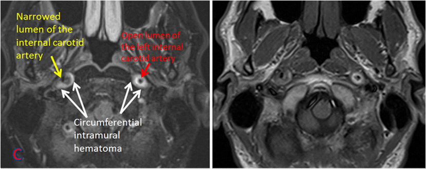

Ficha del catálogo
Disección arterial cervical
- Sistema
- Nervioso
- Modalidad
- RM
- Región
- Arterias carótida interna y vertebral extracraneales
- Dificultad
- Avanzado
La disección arterial cervical es la rotura de la íntima con formación de un hematoma en la pared del vaso, que estrecha la luz y actúa como fuente de émbolos. Es una causa importante de ictus en adultos jóvenes y puede aparecer tras un traumatismo menor, una maniobra cervical brusca o de forma espontánea en pacientes con arteriopatía subyacente.
Técnica
Resonancia magnética cervical con secuencias potenciadas en T1 con saturación de la grasa en plano axial, angiografía por resonancia y estudio de encéfalo con difusión. La angiotomografía de troncos supraaórticos es la alternativa más rápida en urgencias.
Qué observar
- Hematoma mural en semiluna hiperintenso en T1 con saturación grasa
- Estrechamiento largo y afilado de la luz, distinto de la placa focal
- Aumento del diámetro externo del vaso con luz reducida
- Colgajo intimal o doble luz cuando se identifican
- Dilatación pseudoaneurismática en el segmento afectado
- Infartos embólicos distales en el territorio correspondiente
Hallazgos
En el corte axial con saturación de la grasa se observa una imagen semilunar hiperintensa que rodea de forma excéntrica la luz permeable, correspondiente al hematoma de pared, con aumento del calibre externo del vaso. La angiografía muestra estenosis larga e irregular de terminación afilada, oclusión de aspecto puntiagudo o dilatación pseudoaneurismática. En el encéfalo pueden verse infartos corticales dispersos de mecanismo embólico.
Perlas
El hematoma mural puede ser isointenso en las primeras horas y hacerse claramente hiperintenso en los días siguientes, de modo que un estudio precoz negativo no descarta la disección y conviene repetirlo si la sospecha persiste. La saturación de la grasa es imprescindible, ya que sin ella la grasa perivascular imita el hematoma de pared.
Diagnóstico diferencial
- Ateromatosis carotídea
- Estenosis focal en el bulbo con placa calcificada y sin hematoma mural en semiluna.
- Displasia fibromuscular
- Alternancia de estrecheces y dilataciones en cuentas de rosario en el segmento medio, con frecuencia bilateral.
- Vasculitis de gran vaso
- Engrosamiento parietal circunferencial y concéntrico con realce, y afectación de varios territorios.
- Hipoplasia congénita de arteria vertebral
- Calibre uniformemente reducido en todo el trayecto sin hematoma parietal ni irregularidad.
Simuladores
- Grasa perivascular no saturada que remeda hematoma mural
- Flujo lento o turbulento que produce señal intraluminal falsa
- Plexo venoso periarterial prominente alrededor de la arteria vertebral
Por modalidad
- TC
- La angiotomografía define bien la luz, el calibre externo y el pseudoaneurisma, y está disponible con rapidez.
- RM
- Muestra directamente el hematoma de pared y evalúa al mismo tiempo el parénquima con difusión.
Protocolo
Axiales T1 con saturación grasa desde la base del cráneo hasta el cayado, angiografía por resonancia de troncos supraaórticos e intracraneal, y estudio de encéfalo con difusión. El seguimiento a los meses documenta la recanalización y ayuda a decidir la duración del tratamiento antitrombótico.
Clasificación
Se describe según el vaso implicado y su extensión y según el patrón angiográfico predominante, que puede ser de estenosis, de oclusión o de pseudoaneurisma. También se distingue entre disección espontánea y traumática y entre extracraneal e intracraneal, distinción relevante por el riesgo de hemorragia subaracnoidea en las intracraneales.
Errores frecuentes
- Omitir la saturación de la grasa y confundir grasa perivascular con hematoma mural
- Descartar la disección con un estudio muy precoz sin repetirlo
- No estudiar la arteria vertebral en su trayecto intraforaminal y en el segmento distal

disección arterial hematoma mural ictus del adulto joven arteria vertebral carótida interna angiografía por resonancia